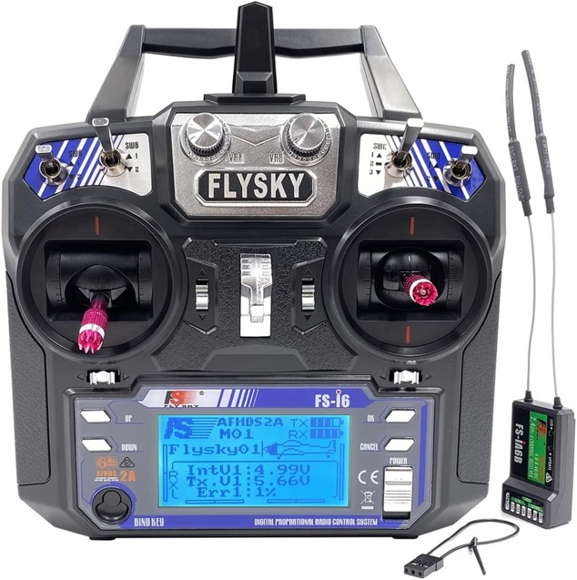

Using a Standard FlySky Remote and Receiver with Arduino¶

In this section, we'll learn how to integrate a standard FlySky remote control and its corresponding receiver with an Arduino. This setup allows you to remotely control your robot with a professional-grade RC transmitter.
Understanding the FlySky Remote System¶
FlySky remotes are popular in the RC (radio control) hobby community due to their reliability and ease of use. They typically come with a transmitter (the remote control) and a receiver, which communicates wirelessly with the transmitter to relay commands to your project.
Components Needed¶
- FlySky FS-i6 Transmitter
- FlySky FS-iA6B Receiver
- Arduino Nano
- Jumper wires
- Breadboard
Wiring the FlySky Receiver to the Arduino¶
The FlySky FS-iA6B receiver outputs PWM (Pulse Width Modulation) signals for each channel. Each channel corresponds to a control on the transmitter, such as a joystick or switch.
Connections¶
- Power the Receiver:
- VCC (5V) on the receiver to 5V on the Arduino
- GND on the receiver to GND on the Arduino
- Connect PWM Channels to Arduino:
- Channel 1 (CH1) on the receiver to a digital input pin (e.g., D2 on the Arduino)
- Channel 2 (CH2) on the receiver to a digital input pin (e.g., D3 on the Arduino)
- Repeat for additional channels as needed
Reading PWM Signals from the Receiver¶
The receiver outputs PWM signals, which the Arduino can read and interpret. Each PWM signal consists of a series of pulses where the pulse width represents the position of the control on the transmitter.
Example Code for Reading PWM Signals¶
We'll use the pulseIn function to measure the duration of the high pulse from the receiver, which corresponds to the position of the joystick or other control.
const int ch1Pin = 2; // Pin connected to CH1
const int ch2Pin = 3; // Pin connected to CH2
void setup() {
Serial.begin(9600);
pinMode(ch1Pin, INPUT);
pinMode(ch2Pin, INPUT);
}
void loop() {
// Read the pulse width from CH1
unsigned long ch1PulseWidth = pulseIn(ch1Pin, HIGH);
// Read the pulse width from CH2
unsigned long ch2PulseWidth = pulseIn(ch2Pin, HIGH);
// Print the pulse widths to the Serial Monitor
Serial.print("CH1: ");
Serial.print(ch1PulseWidth);
Serial.print(" CH2: ");
Serial.println(ch2PulseWidth);
delay(100);
}
Interpreting the PWM Signals¶
The pulseIn function measures the duration of the high pulse in microseconds. The pulse width typically ranges from 1000 to 2000 microseconds:
- 1000 microseconds: Control is at one extreme (e.g., joystick fully left or down)
- 1500 microseconds: Control is centered
- 2000 microseconds: Control is at the other extreme (e.g., joystick fully right or up)
Controlling a Robot with PWM Signals¶
Once you have the pulse widths, you can map these values to control various aspects of your robot, such as motor speed, direction, or servo position.
Example: Controlling a Motor¶
Let's assume you want to control the speed of a motor using the joystick on your FlySky transmitter.
const int motorPin = 9; // Pin connected to the motor driver
void setup() {
Serial.begin(9600);
pinMode(ch1Pin, INPUT);
pinMode(motorPin, OUTPUT);
}
void loop() {
unsigned long ch1PulseWidth = pulseIn(ch1Pin, HIGH);
// Map the pulse width to a PWM value (0-255) for motor speed
int motorSpeed = map(ch1PulseWidth, 1000, 2000, 0, 255);
// Set the motor speed
analogWrite(motorPin, motorSpeed);
Serial.print("Motor Speed: ");
Serial.println(motorSpeed);
delay(100);
}
Tasks¶
Task 1: Reading Additional Channels (Easy)¶
Objective: Extend the example to read additional channels from the receiver, such as CH3 and CH4. Display these values on the Serial Monitor.
Hint:
- Connect additional channels (CH3, CH4) to digital pins on the Arduino.
- Use the pulseIn function to read the pulse widths from these channels.
- Display the pulse widths for all channels on the Serial Monitor.
Task 2: Control Multiple LEDs (Medium)¶
Objective: Use the FlySky remote to control multiple LEDs connected to the receiver Arduino. For example, use one channel to control the brightness of an LED and another channel to switch between different LEDs.
Hint:
- Connect multiple LEDs to different digital pins on the Arduino.
- Map the PWM values from the remote to control LED brightness using analogWrite.
- Implement logic to switch between different LEDs based on the received PWM values.
Advanced Task: Control Motors Using PWM Signals¶
Objective¶
Use the PWM signals from the FlySky remote to control motors using the L298N motor driver.
Wiring the Motors and L298N Motor Driver¶
- Connect the L298N Motor Driver: Follow the wiring instructions from previous tutorials to connect the motor driver to the Arduino Nano and motors.
- Connect PWM Outputs: Use the PWM values from the FlySky remote to control the speed and direction of the motors.
Code Example¶
#include <Wire.h>
#include <Adafruit_MotorShield.h>
// Create the motor shield object with the default I2C address
Adafruit_MotorShield AFMS = Adafruit_MotorShield();
// Connect a DC motor to port M1
Adafruit_DCMotor *motor1 = AFMS.getMotor(1);
int ch1Pin = 2; // Channel 1 on D2
int ch2Pin = 3; // Channel 2 on D3
void setup() {
Serial.begin(9600);
// Set pins as input
pinMode(ch1Pin, INPUT);
pinMode(ch2Pin, INPUT);
// Start the motor shield
AFMS.begin();
// Set the speed to 0 to start
motor1->setSpeed(0);
}
void loop() {
// Read the PWM values
int ch1Value = pulseIn(ch1Pin, HIGH);
int ch2Value = pulseIn(ch2Pin, HIGH);
// Map the PWM values to motor speed (0-255)
int speed = map(ch1Value, 1000, 2000, 0, 255);
// Set motor direction based on Channel 2
if (ch2Value > 1500) {
motor1->run(FORWARD);
} else {
motor1->run(BACKWARD);
}
// Set motor speed
motor1->setSpeed(speed);
// Print the values to the Serial Monitor
Serial.print("Channel 1: ");
Serial.print(ch1Value);
Serial.print(" Channel 2: ");
Serial.println(ch2Value);
delay(100);
}
Code Explanation¶
- Motor Control: The motor speed is set based on the PWM value from Channel 1, and the direction is controlled by Channel 2.
- Mapping PWM Values: The
mapfunction converts the PWM values from the FlySky receiver to a range suitable for motor control.
Running the Code¶
- Connect your FlySky receiver and motors to your Arduino Nano as described.
- Open the Arduino IDE and paste the advanced code.
- Select the correct board (Arduino Nano) and port under Tools.
- Upload the code to your Arduino Nano.
- Use the FlySky remote to control the motors.
Tips¶
- Secure Connections: Ensure your wiring is secure to avoid intermittent connections.
- Power Supply: Use a stable power supply to avoid fluctuations in motor speed.
- Calibration: Calibrate the PWM values if needed to match the range of your remote.
Troubleshooting¶
- No Response: Check the wiring, ensure the correct power supply is used, and verify the PWM pins are correctly connected.
- Incorrect Motor Behavior: Ensure the motor driver is correctly connected and the PWM values are properly mapped.
Additional Resources¶
This tutorial should help you get started with using the FlySky remote and receiver to control motors with your Arduino Nano. Experiment with different configurations and setups to fully explore the capabilities of your project. Happy experimenting!